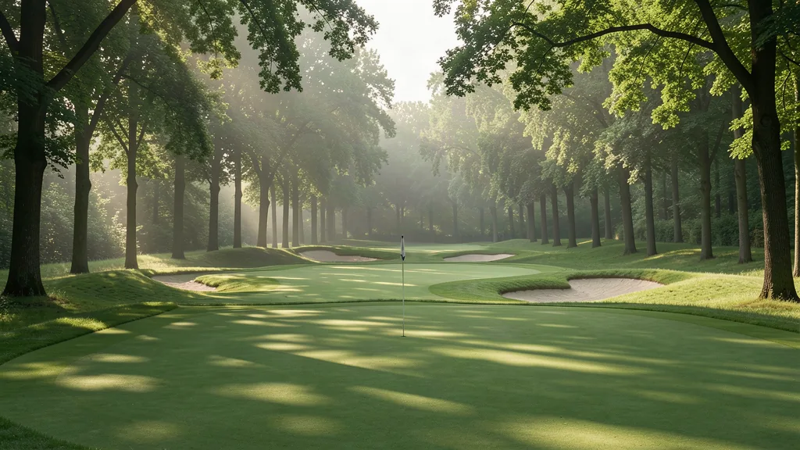

Secret California Golf Courses
· By GoldenPath Guide Editorial Team
Everyone knows Pebble Beach and Torrey Pines. But part of golf's charm in California is the underdog — the course that isn't on every bucket list yet delivers a memorable, well-kept round at a price that feels almost unfair. These are the "secret" courses: public, affordable and quietly adored by locals, often just minutes from the famous names. On a still morning the dew hangs on the fairway, and the only sound is your own bag clinking as you walk.

Why these fly under the radar
The famous courses advertise themselves. The best-kept secrets don't. Many of California's finest value rounds sit just outside the spotlight — a municipal track with an unexpectedly great layout, a tribal or desert course that's immaculately maintained, or a regional favorite that never gets the national buzz. They reward the golfer willing to look beyond the marquee names.
Northern California
- Pacific Grove Golf Links (Monterey) — the "poor man's Pebble Beach," right on the bay and incredibly cheap. One of the best values in the state.
- CordeValle (Santa Cruz area) — a hidden Robert Trent Jones Jr. resort course tucked in the hills, close to Silicon Valley.
- Rustic Canyon (Moorpark / LA) — a walkable, linksy public course considered among America's best for the money.
Southern California
- Barona Creek (San Diego) — tribal-owned, always meticulously kept, with genuine value and rarely crowded.
- Rams Hill (Borrego Springs) — a desert escape east of San Diego with big sky and a beautiful Tom Fazio design, where the dry air carries nothing but the clean click of your club.
- Sandpiper (Santa Barbara) — a linksy public course with sweeping Pacific views.
- Half Moon Bay (Ocean) (Bay Area) — cliff-top links with a dramatic finish below the Ritz-Carlton.
The desert
Beyond the famous PGA West, the Coachella Valley hides quiet options too.
- Indian Wells Resort (Players) — a manicured, scenic desert resort that's fair and beautiful.
- Desert Willow (Firecliff) — a dramatic daily-fee course that often slips under the radar.
- Maderas (Poway) — a hilly, tree-lined course northeast of San Diego with real character.
Pairing secrets with the icons
A smart golf trip mixes one splurge with a couple of hidden gems. Play a bucket-list course like Pebble Beach or Torrey Pines one day, then spend the next enjoying an underdog gem at a fraction of the cost. That balance gives you the headline experience and the local insight — without blowing the budget. Places like these are the ones you end up quietly recommending for years, a small secret you'd almost rather keep.
Booking Private-Access and Semi-Private Gems
Under-the-radar California golf splits into two access types. Semi-private tracks like Soule Park in Ojai ($80 to $120) and avid-golfer favorites in the Central Valley take public tee times a week or two out with no membership needed. True private clubs open doors through member invitations, charity outings ($250 to $500 entry fees that include golf, meals and range) and select stay-and-play affiliations — the pro-shop phone call asking about unaccompanied-guest policies costs nothing and occasionally succeeds midweek. Twilight windows after 2 p.m. cut semi-private rates 25 to 40 percent. Monday outings dominate the charity calendar from March through October; the state golf association sites list them with entry details. Resort-affiliated privates in the desert extend member-for-a-day access to lodging guests. Skip the cold-call weekend request at any private club — Tuesday-through-Thursday inquiries with flexible dates get the only yeses.
Northern Versus Southern Price Map
Hidden-gem pricing follows the state's fault lines. Bay Area-adjacent secrets run $100 to $180 on weekends — the land costs show — while Sacramento Valley and North Bay tracks charge $60 to $100 for comparable architecture. Sierra foothill courses (Grizzly Ranch area, Apple Mountain) run $70 to $120 with elevation air adding distance. Southern California's inland secrets run $80 to $150; the desert's second-tier tracks charge $100 to $200 in February-through-April peak and collapse to $50 to $80 from June through August. Coastal Southern California hides almost nothing cheap — budget $120-plus for any ocean-adjacent round. Walking-friendly layouts cluster in the north (cooler weather, compact routings); desert and inland-south layouts assume carts, usually included. Replay rates typically run half-price same day — ask at check-in, since unadvertised replay deals are common.
Tee-Time Tactics and Stay-and-Play Math
Booking systems open 7 to 14 days ahead at most municipal and semi-private gems; the prime Saturday 8-to-10-a.m. block vanishes within hours at the popular ones — log in at release time. Weekday mornings play 30 to 45 minutes faster than weekend equivalents, and senior/junior discounts (typically 15 to 25 percent) apply at municipal-affiliated tracks. Stay-and-play packages at the golf-resort secrets bundle lodging plus one or two rounds at 15 to 25 percent below separate pricing; the math works best for twosomes across two days. Range balls usually include with the round at privates and cost $10 to $15 extra at public tracks. Rental sets at hidden gems run $40 to $60 — adequate but dated, so low-handicap travelers should haul their own. Skip holiday-weekend bucket-list attempts at the famous-adjacent gems; the secret stops being secret when everyone has the day off.
Best Playable Courses in California
Best Public Golf Courses
Golf Season California